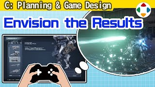
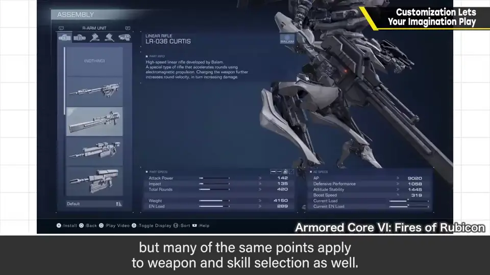
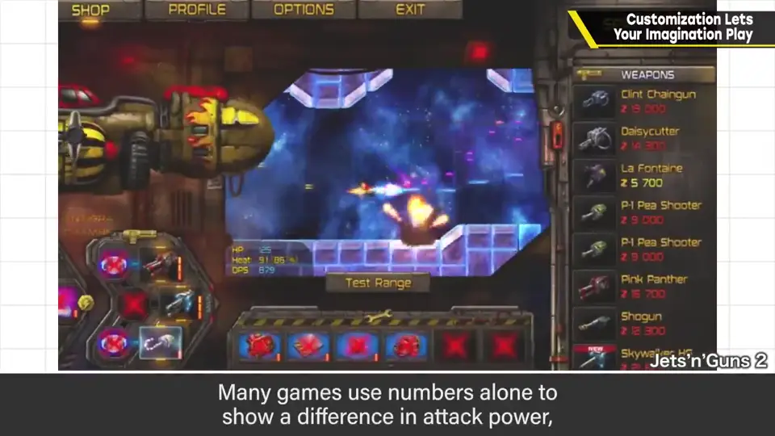
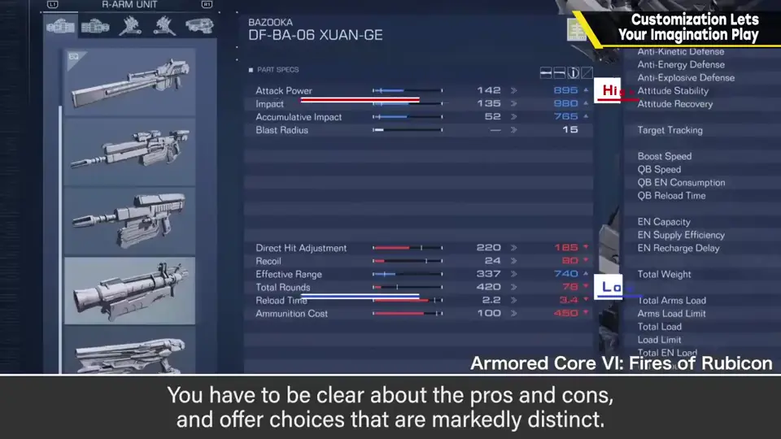
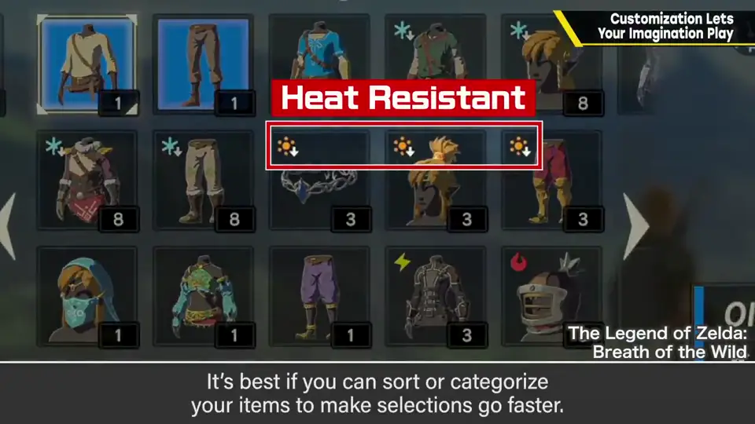
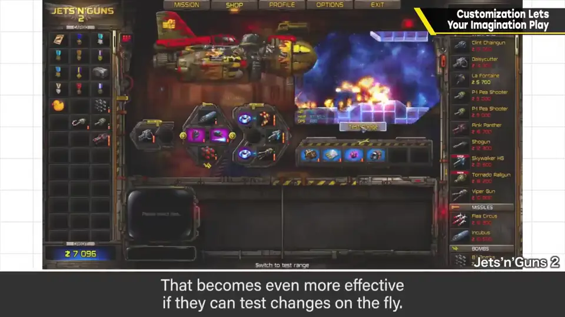
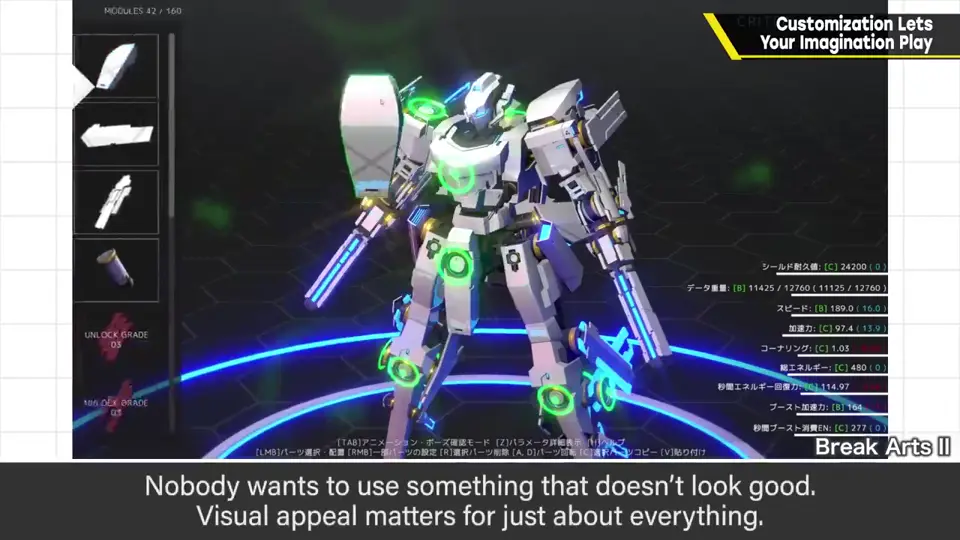

速览
有一类游戏是先做某种自定义再用它来玩，机甲类尤其多。这里虽说是自定义，也与武器选择、技能选择相通。这类游戏自定义的作业本身就要好玩，也必须让人享受这个作业。做东西时也一样：多数作品和提案都是想象接收者的反应来打磨的，要做好东西不可或缺的是意识第三方的反应。自定义深的游戏，不只结果，也要照顾制作过程和 UI。说是作业，就有麻烦的一面；但作业之后能得到什么好处要清楚。五点：① 效果可视化：例如明示攻击范围；很多作品用数值显示攻击力差别，但不该只是数值序列，而要有直觉能懂的机制。② 优缺点分明：例如范围广但射程短、范围窄但打得远——有驾驭意义的东西才使自定义有分别；需要明示，也需要稍极端地赋予个性。③ 容易挑选：选项多也是收集要素，但数量会非常多，最好能排序、分类快速选；外观看不出差别的部件或武器排在一起、图标看不出差异会很麻烦，先要易于区分，UI 上更易选更好；自动装备最强装备无论如何都不可或缺。④ 能迅速试用：自定义的结果马上能试最好，边改边试效果更好。⑤ 设计上帅气：难看的东西谁都不想玩；即使毫无性能，光换装就很开心，也有只靠这个成立的自定义（帅也可以换成可爱）。自定义带来与单纯游戏性不同质的乐趣，好好审视替换方式与内容很重要。
1. 自定义的作业本身要好玩 0:03
有一类游戏，先做某种自定义，再用它来玩——机甲类尤其多。这次虽然说「自定义」，但也与武器选择、技能选择等相通。

做东西时也一样：多数作品和提案，都是一边想象接收者的反应一边打磨的。要做好东西，意识到第三方的反应不可或缺。自定义深的游戏，不只结果，制作过程及其 UI 也要照顾到。
说实话既然是作业，就有麻烦的一面；但作业之后能得到什么好处，要说清楚。下面列出五点。
2. 五个要点 1:06
① 效果可视化：例如明示攻击范围。很多作品用数值显示攻击力差，但不该只是数值序列，而应该有直觉就能懂的机制。


② 优缺点分明：例如攻击范围广但射程短的武器、范围窄却能打很远的武器——有驾驭意义的东西，才能让自定义有区分度。需要明示，也需要稍微极端地赋予个性。
③ 容易挑选：选项多也是收集要素，但数量会非常多，最好能靠排序、分类快速选择。外观看不出差别的部件或武器排成一排、图标看不出区别会很痛苦，所以先要容易区分，UI 上更好选更好。另外，自动装备强力装备无论如何都不可或缺。


④ 能迅速试用：自定义的结果能马上试最好；如果能边自定义边试，效果更好。
⑤ 设计上帅气：难看的东西没人想用来玩，无论什么，帅都很重要。就算完全没有性能，光是换装也很开心，也有只靠这个就成立的自定义。（帅也可以换成可爱。）

自测题
1. 樱井认为自定义类游戏首先要做到什么？
自定义的作业本身就要好玩，不只结果，过程与 UI 也要照顾。 0:20
2. 好玩自定义的五个要点？
① 效果可视化 ② 优缺点分明 ③ 易于挑选（排序分类、自动装备）④ 能迅速试用 ⑤ 外观帅气。 1:06
3. 为什么说「自动装备强装备」不可或缺？
选项很多时，它让挑选更省事；樱井认为无论如何都必须有。 2:13